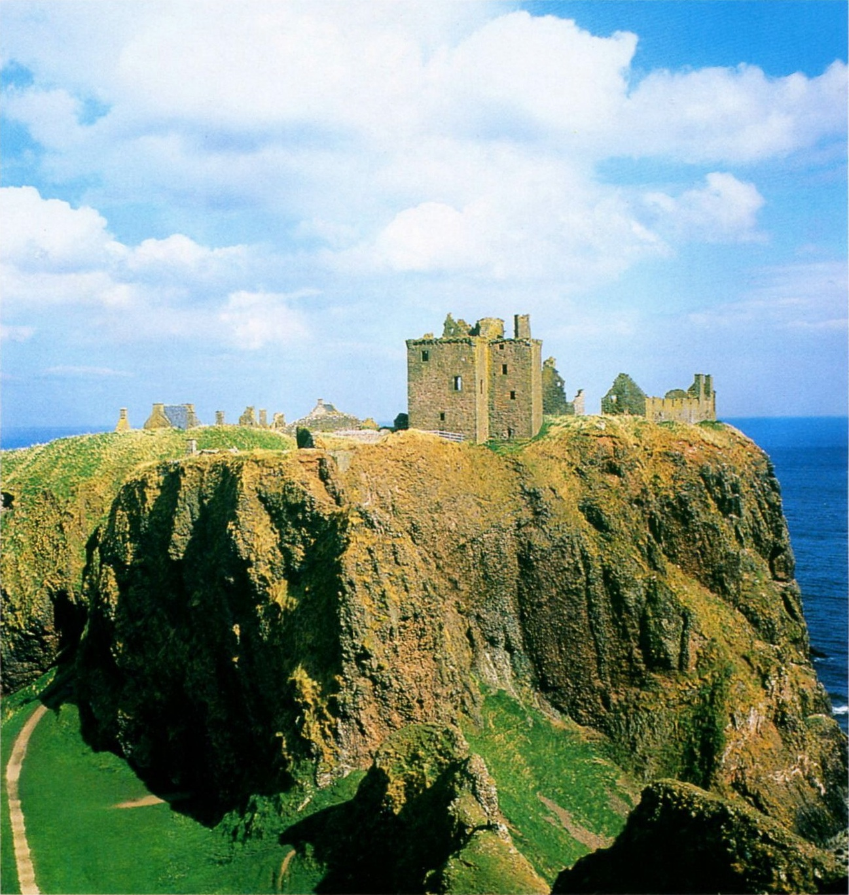
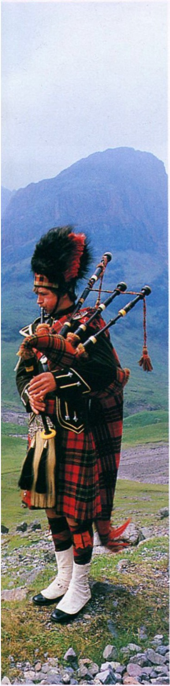

- Название «Шотландия» происходит от кельтского племени скоттов, пришедшего сюда из Ирландии в V-VI веках н.э.
- Летняя резиденция британской королевской семьи — дворец Балморал в Шотландии.
- Озеро Лох-Несс, расположенное в долине Глен-Мор, по мнению множества энтузиастов, скрывает в своих водах Несси — самое загадочное существо на планете. Подтвердить его существование надежными доказательствами пока не удалось.
- По имени этой северной части Великобритании названы две породы собак — шотландская овчарка и шотландский терьер.
ШОТЛАНДИЯ
Над вершинами Северной Британии

Замок Дрнноттар на северном побережье Шотландии вблизи города Стонхейвен. Овеянный легендами, воздвигнутый на голых скалах у Северного моря, он напоминает орлиное гнездо. Как и множество других замков этого региона, крепость стала особенно знаменитой благодаря «обитающему» в ней привидению
ШОТЛАНДСКИЙ ЧЕРТОПОЛОХ — ВЕЧНАЯ ЗАНОЗА ДЛЯ АНГЛИЧАН
Хотя Шотландия со времен принятия конституции в XVIII веке политически тесно связана с Англией, призывы к независимости в этом непокорном регионе никогда не умолкали надолго.
- Города: Эдинбург (замок), Глазго и Кулросс (поселение XVI-XVII веков).
- Гебридские острова (Скай, Стаффа).
- Шетландские острова.
- Долина реки Твид.
- Регион Соединенного Королевства Великобритании и Северной Ирландии.
- Столица: Эдинбург
- Крупнейшие города: Абердин, Данди, Глазго.
- Денежная единица: фунт стерлингов
- Религия: христианство.
- Крупнейшие аэропорты: Эдинбург, Глазго.
Морской умеренный. Средняя температура января — +4*С; июля — +12*С
Шотландцы до сих пор считают 1174 год одной из самых черных дат в своей истории — тогда шотландский король Вильгельм I Лев признал себя вассалом Англии. Лишь спустя двести лет, во времена правления могущественной династии Стюартов, эта страна вновь стала восприниматься как серьезная угроза для английской короны.В 1603 году, после смерти английской королевы Елизаветы I, на английский трон взошел шотландец — король Яков I. После долгих лет смуты в 1707 году Шотландия и Англия были объявлены Соединенным Королевством. Об этом событии и сегодня напоминает британский национальный флаг, объединивший шотландский крест Святого Андреаса с английским крестом Святого Георга. Однако, несмотря на экономическое и политическое слияние обоих народов, национальное самосознание шотландцев за последние три столетия ничуть не угасло. Последняя серьезная попытка отделиться от Англии была предпринята в 1978 году.
- Площадь: 78,8 тыс. км2.
- Население: 5,1 млн человек
- Самая высокая точка: гора Бен-Невис (1343 м)
- Количество островов в Шотландии: около 800.
Сельское хозяйство: овцеводство, рыболовство. Промышленность: судостроение, горнодобывающая промышленность, добыча нефти и газа, текстильная промышленность. Туризм.

Шотландский горец, одетый в традиционную клетчатую юбку (килт), с национальным шотландским инструментом— волынкой.
СТРАНА ГОР И ДОЛИН
Северная часть Британских островов — самый гористый из регионов страны. На Шотландском нагорье с его многочисленными озерами и изрезанным фьордами побережьем можно увидеть удивительное смешение ландшафтов.
Глубокая и узкая впадина Глен-Мор протянулась по всей Шотландии, поделив территорию страны на две половины. Севернее этой линии лежит Шотландское нагорье с щедро рассыпанными по нему озерами — родина знаменитого шотландского виски. К югу от Глен-Мора простираются Грампианские горы с величественной вершиной Бен-Невис (1343 м), которая является самой высокой точкой во всей Великобритании. Еще южнее протянулась живописная обширная низменность, местами покрытая торфяниками и поросшая вереском, — равнина, словно надрезанная двумя глубоко вклинившимися в нее фьордами: Ферт-оф-Форт на востоке и Ферт-оф-Клайд на западе. Здесь располагаются два крупнейших города Шотландии — Глазго и Эдинбург. Дальше вновь начинаются горы. Здесь в 122 году н.э. по приказу императора Адриана римляне воздвигли защитный вал, долгое время бывший границей между Англией и Шотландией. Горный ландшафт вулканического происхождения определяет рельеф почти 800 островов Шотландии. Самые известные из них — Гебриды, с островом Скай, и Шетландские острова. Шотландия всегда привлекала к себе туристов, предпочитавших уединение и близость к природе привычной суете туристических маршрутов.